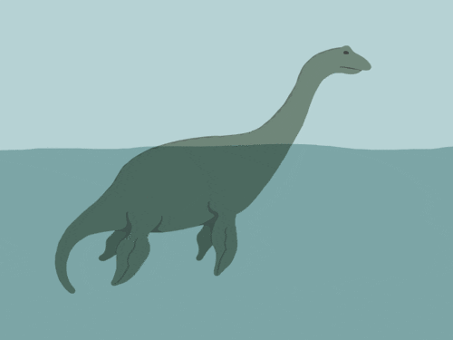

Loch Ness Monster 🦕

深邃的尼斯湖，一直以來都是神秘與謎團的代名詞。在這裡，傳說與歷史交織成一張網，捕捉著每一位探險者的好奇心。
我們今天要講述的，不僅僅是一則故事，而是一個世紀以來，持續捉摸不透的謎—尼斯湖水怪，或者您更熟悉的名字，尼斯湖的「nessie」。
自1933年一張模糊的照片震驚世界以來，尼斯湖水怪的傳說便深植人心。有人說，它是史前生物的最後倖存者，有人則猜測它只是一條大魚或者被誤認的水中樹幹。
但無論真相如何，它那突出水面的輪廓已經成為這片水域的永恆圖騰。
每年，來自世界各地的遊客蜂擁至尼斯湖，希望能一睹「nessie」的風采。湖面上，偶爾會有波浪起伏，彷彿是某種巨大生物的背鰭在遊弋。
而每當湖面回歸寧靜，人們又會開始質疑，那一切是否只是幻影。
不過，尼斯湖不僅僅有水怪傳說。它的深度足以埋藏著一座古堡，湖底下還有未知的遺跡等待著勇敢的探險者去發現。
無論您是來自遠方的旅人，還是尋求刺激的冒險家，尼斯湖都準備好迎接您的到來，用它的秘密，挑戰您的想像。
所以，拉緊您的風衣，準備好您的望遠鏡，一場關於尼斯湖水怪的尋秘之旅即將開始。
在這個旅程中，不僅是尋找「nessie」，更是尋找那份驚奇與未知的樂趣。歡迎來到尼斯湖，一段離奇而有趣的探險現在就要開啟了。